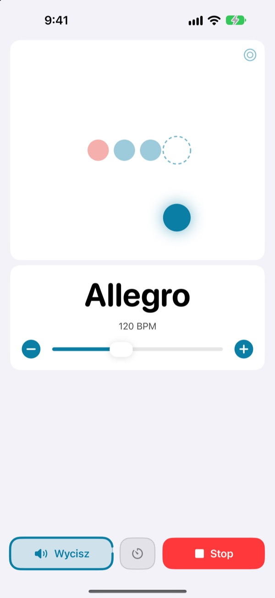
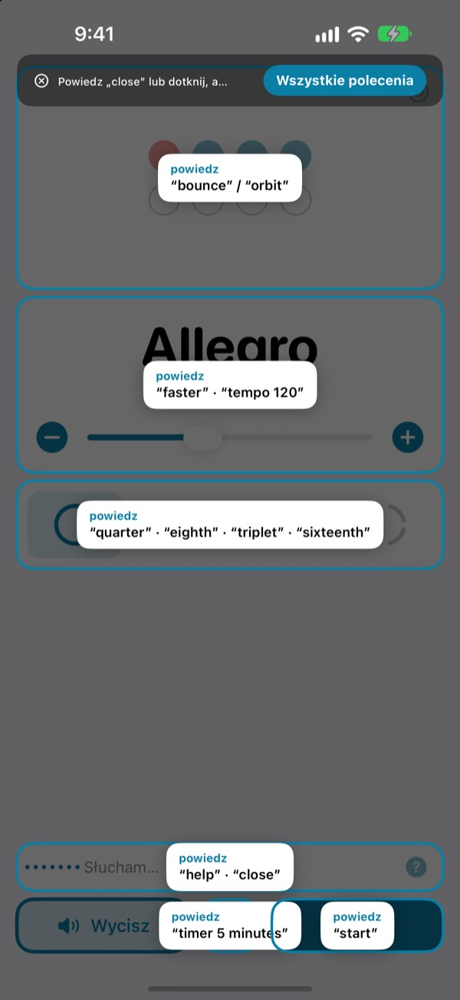
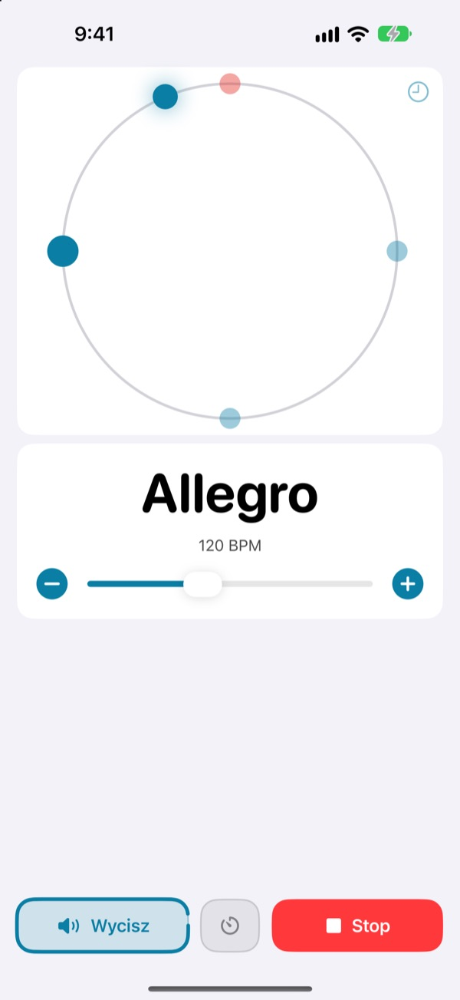
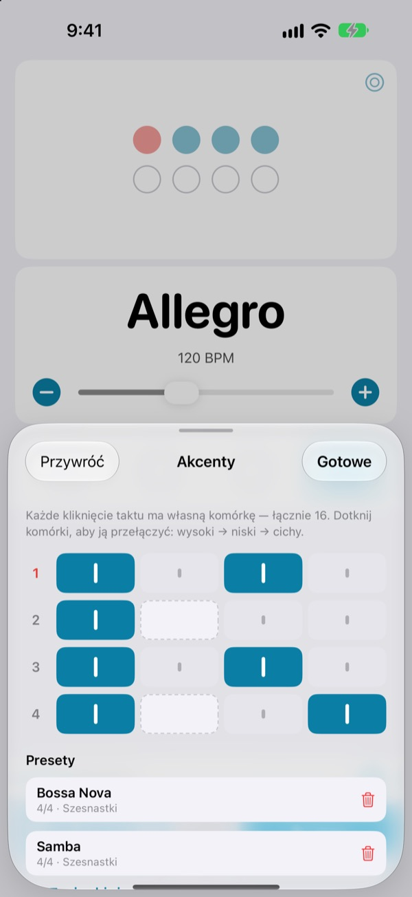

Ręce na instrumencie,
tempo głosem
Powiedz faster w środku frazy, a metronom przyspieszy. Bez sięgania do ekranu i bez przerywania gry. Polecenia wypowiada się po angielsku.
Pełny metronom i sterowanie głosem są za darmo.

Spróbuj na głos
Stuknij frazę albo włącz mikrofon i powiedz ją po angielsku. Podkręć głośność, bo metronom klika.
Zgubiłeś groove tylko po to, żeby trochę zmienić tempo?
Odkładasz smyczek, bierzesz kostkę w zęby, dwa razy stukasz w ekran i to, co właśnie złapałeś, znika. Not My Tempo zmienia tempo jednym słowem, a Ty grasz dalej w tej samej pozycji.
Mówisz, a klik słucha
Krótkie angielskie słowa, takie jak start, faster czy tempo 120. Aplikacja słucha od razu po otwarciu, bez włączania Sterowania głosowego iOS ani ustawień dostępności.
Nie pamiętasz polecenia? Powiedz help, a wszystkie frazy pojawią się na ekranie.

Rytm widać też na ekranie
Wybierz odbicie, orbitę albo pierścień. Pierwsze uderzenie taktu jest czerwone i klika głośniej.
Stukaj w rytm w orbitę, a zobaczysz, jak blisko trafiasz.

Akcenty zapisane dla każdego utworu
Ustaw każde kliknięcie w takcie jako wysokie, niskie albo ciche i zapisz je jako preset. Wzór bossa novy czy samby budujesz raz, a potem tylko go wybierasz. (Pro)

Trzy kroki na start
- 1
Otwórz aplikację
Od razu zaczyna słuchać.
- 2
Zezwól na mikrofon
O dostęp do mikrofonu i rozpoznawania mowy pyta tylko raz.
- 3
Mów albo stukaj
Każde polecenie ma też przycisk na ekranie.
Co możesz powiedzieć
- start · stop
- start, pauza
- faster · slower
- szybciej lub wolniej o 5 BPM
- up · down
- szybciej lub wolniej o 1 BPM
- tempo 120
- od razu wybrane tempo
- double · half
- dwa razy szybciej, dwa razy wolniej
- three beats
- zmiana metrum
- quarter · eighth · triplet · sixteenth
- ćwierćnuty, ósemki, triole, szesnastki
- louder · quieter · mute
- klik głośniej, ciszej, wyciszenie
- volume 60
- głośność w procentach
- bounce · orbit
- zmiana widoku rytmu
- timer 5 minutes
- minutnik ćwiczeń
- practice
- stopniowe podnoszenie tempa podczas ćwiczeń (Pro)
- tune
- otwarcie tunera (Pro)
- help
- lista wszystkich poleceń
- close · done
- zamknięcie otwartego panelu
Rozpoznawanie mowy działa po angielsku (USA), dlatego polecenia wypowiada się angielskimi słowami. Aplikacja jest po polsku, a każde polecenie działa też po stuknięciu.
Metronom jest za darmo, a Pro czeka, gdy zechcesz więcej
Za darmo
- Wszystkie polecenia głosowe
- Metrum od 1 do 8 uderzeń, z akcentem na pierwszym
- Ćwierćnuty, ósemki, triole i szesnastki
- Odbicie, orbita i pierścień
- Tap tempo i sprawdzanie rytmu
- Minutnik ćwiczeń
Not My Tempo Pro
- Tryb ćwiczeń: dodaje kilka BPM co kilka taktów, aż dojdziesz do tempa docelowego
- Edytor akcentów z presetami dla każdego utworu
- Tuner chromatyczny
Subskrypcja roczna z bezpłatnym okresem próbnym albo jednorazowy zakup na zawsze
Sterowanie głosem i funkcje dostępności zostaną bezpłatne dla wszystkich. Jeśli kupiłeś aplikację, zanim pojawiło się Pro, wszystkie funkcje Pro już masz.
Pytania
Czy mogę mówić po polsku?
Rozpoznawanie mowy działa po angielsku (USA), więc polecenia to krótkie angielskie słowa, takie jak start czy faster. Szybko wchodzą w nawyk, a każde polecenie działa też przyciskiem.
Aplikacja mnie nie słyszy.
Sprawdź, czy przy mikrofonie widnieje „Słucham”. Jeśli nie, stuknij „Słuchaj”. W głośnym pomieszczeniu albo przy graniu przez głośniki użyj słuchawek, żeby klik nie trafiał do mikrofonu.
Słuchanie samo się wyłączyło.
Żeby oszczędzać baterię, słuchanie wyłącza się po kilku minutach bez poleceń. Stuknij „Słuchaj”, aby je włączyć.
Tempo wyszło o połowę wolniejsze albo dwa razy szybsze.
Powiedz double albo half, żeby to poprawić.
Jak korzystać z tunera?
Powiedz tune albo stuknij przycisk z falą na karcie tempa. Zagraj dźwięk: gdy wskaźnik trafi w zielone pole, instrument jest nastrojony. Aby wyjść, powiedz close.
Używam już Sterowania głosowego iOS.
Wyłącz mikrofon aplikacji i steruj nią, podając nazwy przycisków. Każdy element ma etykietę VoiceOver.
Czy mój głos jest gdzieś wysyłany?
Nie. Mowa jest rozpoznawana na urządzeniu i nigdy nie jest nagrywana, zapisywana ani wysyłana. Metronom, sterowanie głosem i tuner działają bez internetu.
Jak anulować subskrypcję?
W Ustawienia > Konto Apple > Subskrypcje. Subskrypcja roczna odnawia się automatycznie, jeśli nie anulujesz jej co najmniej 24 godziny przed końcem bieżącego okresu. Zakup na zawsze to jednorazowa opłata.
Pytania lub uwagi? Napisz na leeo@kakao.com.